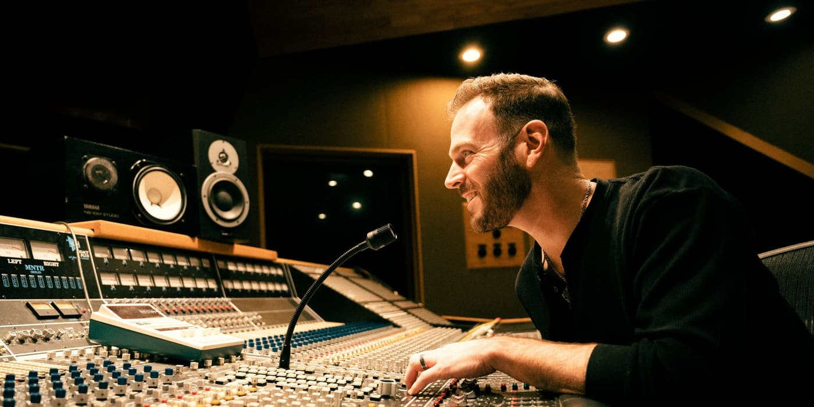

Country song production · Nashville
Your song,
played by Nashville.
Send me a voice memo. My band plays your song, and I produce, mix and master it into a finished record.
9 #1s13 client awards180+ five-star reviewsRecording Academy voting member

You’ve carried this song long enough.
Most of the people I work with have had their songs for years. Some are songwriters who’d rather hire a singer. Some are artists ready for a single, an EP or an album. All of them want the record to sound the way they’ve always heard it.
Want it exactly as you hear it? Done. Want fresh ideas? Ask. You decide how much I shape it.
How it works
01
The voice memoGuitar or piano and a vocal on your phone is all I need.
02
The consultationThe sound in your head, the records you love, and how much I should shape it.
03
The sessionNashville players track your song, and you get video from the room.
04
The recordMixed and mastered by me, ready for release.
Every note played by real Nashville musicians.
No AI-generated music. These are the players I’ve worked with for years.
Included in every song
- GuitarsChris Condon
- BassCaleb Mundy
- Drums and keysMe
- Mixing and masteringMe, in my Nashville studio
- Video from the sessionWatch your song being played
Add when the song calls for it
- Pedal steel and DobroSmith Curry
- Fiddle and mandolinTim Crouch
- Live drumsTommy Harden
- String and horn arrangementsJovan Quallo, Hell Yeah! Horns
- Session vocalsHannah Anders, Kiley Phillips
Traditional, modern, Americana, folk-country, country-pop or Texas and red dirt. Extra players are agreed up front, before we start.
Produced, mixed and mastered
From $2,500 per song
Guitar, bass, drums and keys, mix and master, and video from the session. Albums and catalogs are built as custom programs.
Book a consultationGood questions.
Do I need to come to Nashville?
No. Most of my songwriters work with me from home, and you’ll see video of your song being played. Some people do fly in to sing, and you’re welcome to.
Do I have to sing it myself?
No. Plenty of my songwriters hire a session singer. Hannah Anders and Kiley Phillips sing leads and backgrounds.
What do I need to send you?
A voice memo is perfect: guitar or piano and a vocal. Finished demos and lyric sheets help too.
Will you change my song?
Only as much as you want. Want it exactly as you hear it? Done. Want fresh ideas? Ask.
Is any of it AI?
No AI-generated music. Every note played by real Nashville musicians.
Whenever you’re ready, I’d love to hear your song.
Daniel
Book a consultation